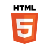
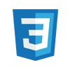
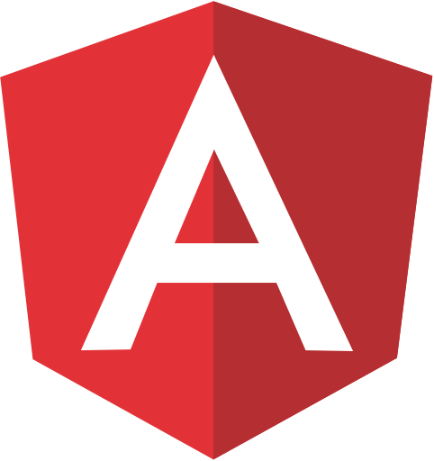
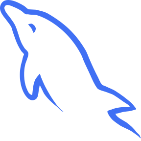
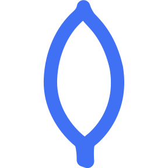
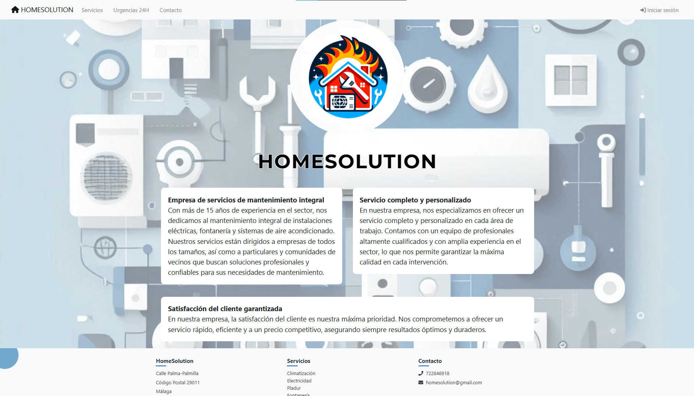
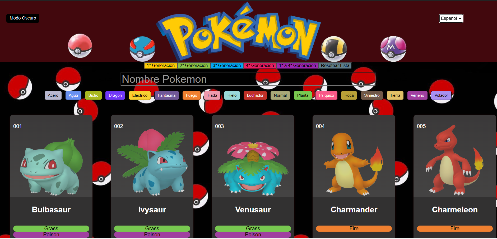
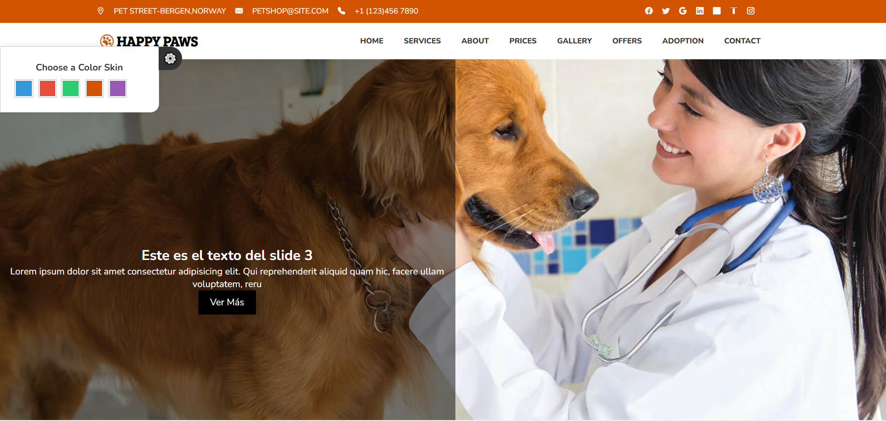
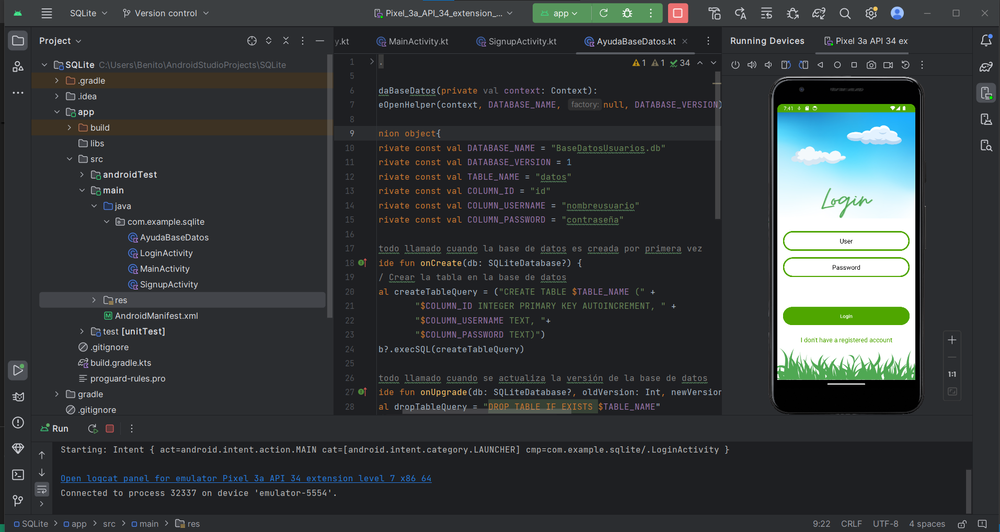

Front-end
Interfaces limpias y responsive con HTML, CSS, JavaScript, TypeScript, Angular y Bootstrap.
Soy Benito Gallardo Peral
Me dedico a construir lo que cualquier proyecto necesita hoy para crecer:
Desarrollador web y de aplicaciones en Málaga. Diseño, programo y conecto el front-end con el back-end para que tu idea funcione de verdad.
Cuéntame qué necesitas y te explico cómo lo haría, sin compromiso.
Interfaces limpias y responsive con HTML, CSS, JavaScript, TypeScript, Angular y Bootstrap.
APIs REST con ASP.NET, Razor Pages en .NET 9, Java y PHP. Lógica segura y bien organizada.
Aplicaciones Android con Kotlin y Android Studio, de la pantalla de login a la lógica completa.
Modelado y consultas con MySQL y MongoDB, e integración con Entity Framework.
Trabajo con estas tecnologías:

HTML5
CSS3
Angular
MySQL
MongoDBEstos son algunos de los proyectos que he construido.

Web de servicios para el hogar (fontanería, pladur, pintura…) con Angular en el front-end y una API REST en .NET Core. Incluye login, gestión de servicios y sección de ofertas.
Tienda online con Razor Pages en .NET: gestión de usuarios, carrito de compra e integración de pagos, con Entity Framework para los datos.

Pokédex interactiva en Angular que consume la API pública de Pokémon y muestra la información de cada criatura de forma dinámica.

Web de reseñas y venta de cuchillos tácticos y navajas, responsive y conectada a una API externa para mostrar los productos dinámicamente.

App Android en Kotlin con un sistema de inicio de sesión y validación de campos, para practicar interfaces móviles y lógica de autenticación.
Soy Benito, desarrollador de software de Málaga. Me gusta unir diseño y funcionalidad: que una web se vea bien y, sobre todo, que funcione. Busco aplicar lo que sé en proyectos reales y seguir aprendiendo en cada uno.
Cuéntame tu idea y la convertimos en algo real.